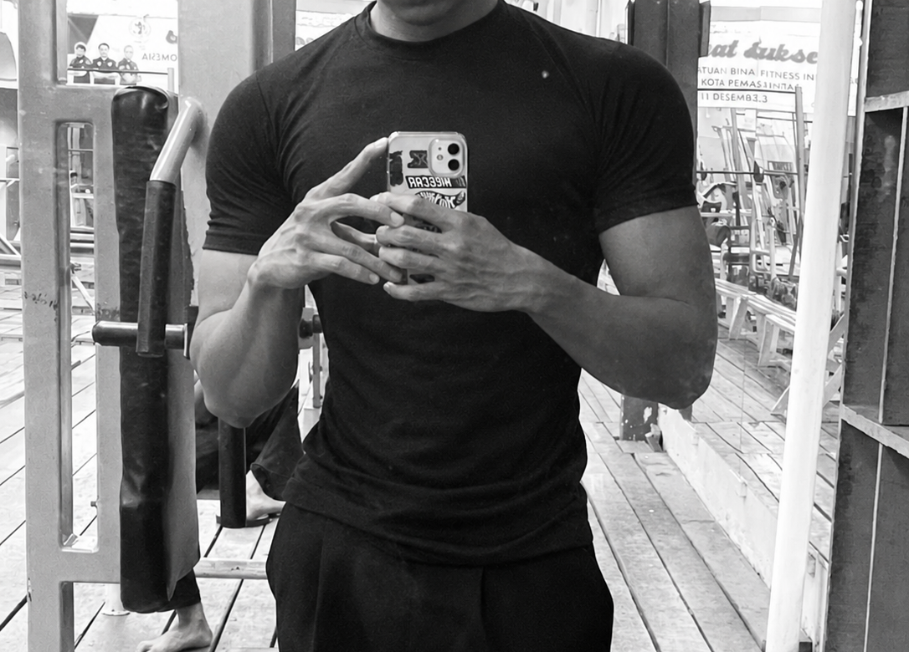

Fitness / Gym


Fitness merupakan hobi yang saya lakukan untuk menjaga kebugaran, melatih kekuatan, dan membangun kebiasaan hidup sehat, dengan saya melakukan hobi ini saya jadi belajar bahwa membangun badan itu membutuhkan proses dan waktu, dan saya juga belajar konsisten dan disiplin dari sini.
Tujuan Saya
Saya ingin terus berkembang, meningkatkan kemampuan fisik, dan menjadi lebih disiplin dalam berlatih.